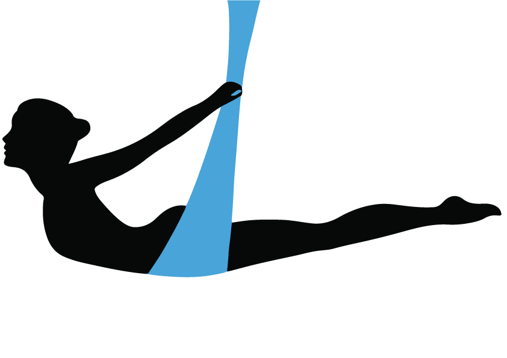

SIA EXTRA FLY un Biedrība Deju studija EXTRA (abas turpmāk EXTRA) rūpējas par Klientu privātumu un personas datu
aizsardzību, ievēro Klientu tiesības uz personas datu apstrādes likumību saskaņā ar piemērojamajiem tiesību aktiem –
Fizisko personu datu aizsardzības likumu, Eiropas Parlamenta un padomes 2016. gada 27. aprīļa Regulu 2016/679 par
fizisku personu aizsardzību attiecībā uz personas datu apstrādi un šādu datu brīvu apriti (Regula) un citiem
piemērojamajiem tiesību aktiem privātuma un datu apstrādes jomā.
Ar šo EXTRA apliecina, ka informācija un personas dati, ko Jūs esat iesniedzis aizpildot pasākumu rezervācijas
anketu,
tiks apkopoti, apstrādāti un glabāti saskaņā ar Eiropas Savienības normatīvo aktu prasībām, attiecībā uz personas
datu
aizsardzību.
Iesniedzot savus datus, Jūs piekrītat, ka dati tiek apstrādāti un uzglabāti visu šeit norādīto datu apstrādes laiku,
kā
arī normatīvajos aktos noteiktajos gadījumos pēc sākotnējās datu apstrādes tik ilgi, cik tas ir nepieciešams.
EXTRA izmantos informāciju, kas sniegta Piesakoties nodarbībās vai citādi EXTRA tīmekļa vietnē vai deju studijā, lai
nodrošinātu jūsu pieprasītos pakalpojumus, izmantojot EXTRA tīmekļa vietni.
EXTRA vai pārstāvji reizēm var izmantot šo informāciju tirgvedības nolūkos, kā arī lai informētu jūs par citiem
produktiem vai pakalpojumiem, kuri jūs varētu interesēt. Reģistrācijas veidlapas attiecīgajā rūtiņā varat norādīt,
vai
vēlaties saņemt šādu informāciju. Ja informācija tiek nodrošināta e-pastā, varat anulēt tās abonēšanu, pieprasot
noņemt
sevi no abonentu saraksta. Jūsu personas informācija var tikt saistīta ar pārlūkprogrammas informāciju, citiem EXTRA
pārstāvjiem un trešām pusēm (piemēram, viesošanas pakalpojumu sniedzējiem) ar iepriekš norādīto nolūku, kā arī
saistībā
ar sīkdatņu politiku un grupu administrēšanas nolūkos.
Mēs esam apņēmušies aizsargāt jūsu privātumu. Jūsu personiskie dati tiek glabāti drošā datorā un manuālā kartotēkā,
un
ar tiem netiek veiktas nekādas citas darbības, kas nav minētas privātuma politikā. Serveris, kuru EXTRA izmanto šo
datu
glabāšanai, ir pieejams nozīmētām trešās puses aģentūrām, darbuzņēmējiem un/vai pilnvarotam EXTRA personālam tikai
stingras EXTRA darbinieku (“Pilnvarotais personāls”) kontroles apstākļos. Šim serverim ir savienojums ar internetu,
izmantojot ugunsmūri, tāpēc tas nav publiski pieejams.
Jūsu datorā tiks instalētas nelielas informācijas daļas — sīkdatnes, lai apkopotu statistisku informāciju, tostarp
par
navigācijas ceļiem, apmeklējumu skaitu, pastāvīgajiem klientiem un lapu apskates skaitu. Vienīgā personiskā
informācija,
kuru sīkdatne var ietvert, ir jūsu paša sniegtā informācija. Sīkdatnes nevar nolasīt datus jūsu cietajā diskā. Mēs
izmantojam šis sīkdatnes, lai izvērtētu mūsu sniegtās informācijas derīgumu un redzētu, cik mūsu tīmekļa vietne ir
draudzīga lietotājam. EXTRA nekopīgo no sīkdatnēm iegūto informāciju ar citiem uzņēmumiem, kas nav EXTRA grupā, kā
arī
nepārdod to trešajām pusēm. Ja nevēlaties izmantot sīkdatnes mūsu vietnē, varat iestatīt pārlūkprogrammu, lai tā
brīdinātu pirms sīkdatņu apstiprināšanas un tās noraidītu pēc pārlūka brīdinājuma par sīkdatņu klātbūtni. Turklāt
varat
noraidīt sīkdatnes, izslēdzot tās pārlūkprogrammā. Sīkdatnēm nav jābūt ieslēgtām, lai iespējotu jebkura EXTRA
tīmekļa
vietnes apgabala izmantošanu.
Jums ir tiesības piekļūt saviem datiem, labot, atjaunināt vai dzēst tos, , iesniedzot pieprasījumu:
dejustudijaextra@gmail.com.
Mēs saglabāsim jūsu personas datus tikai tik ilgi, cik nepieciešams, lai sniegtu jūsu pieprasīto pakalpojumu, vai
atbilstoši tiesību aktos norādītajam laikam.
EXTRA laiku pa laikam var atjaunināt šo privātuma politiku. Šīs izmaiņas var ietekmēt jūsu personas datu lietošanu.
Atjauninātā privātuma politika būs pieejama EXTRA tīmekļa vietnē, jums par to iepriekš nepaziņojot.